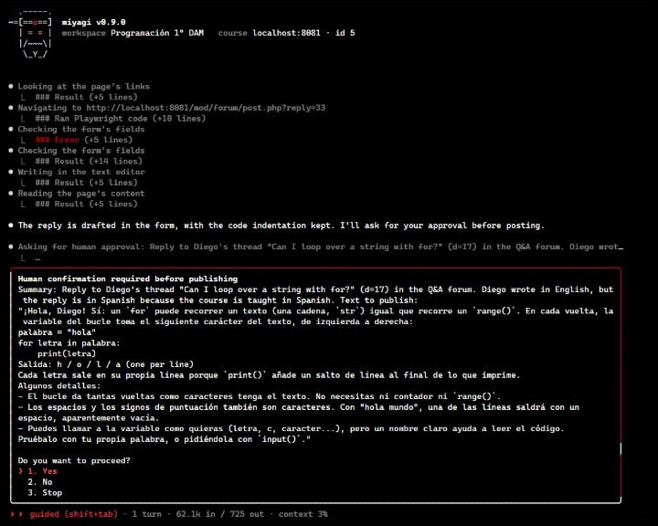

miyagi
AI assistant for teachers to manage Moodle courses
miyagi runs your Moodle course. You give the go‑ahead.
It grades with your rubric, answers the forum, builds units, quizzes and games, and tells you how the class is doing. You can teach it new skills to fit your subject. It works with your teacher account and publishes nothing without your say-so.
Free and open source (MIT license). Runs on your Claude subscription.
- you> Grade Assignment 2 with the unit's rubric
- Reading your rubric and your criteria
- Opening the Assignment 2 submissions
- Grading 3 submissions, criterion by criterion
- All three are graded, with a breakdown per criterion. Starting with Lucy's: 7.5.
-
Your confirmation is needed before publishing
Save Lucy's grade (7.5) and her feedback: the query works, but it doesn't validate the input; I explain how to.
- ❯ 1. Yes
- 2. No
- 3. Stop
- you> Anything new in the forum?
- Opening the Q&A forum
- Reading the unanswered threads
- There's a new question from Mark: "What's the difference between break and continue?". It's the second time it comes up: Unit 3 may need one more example.
-
Your confirmation is needed before publishing
Reply to Mark in the forum: break leaves the loop; continue skips to the next round, with two code examples.
- ❯ 1. Yes
- 2. No
- 3. Stop
- you> Add a unit 4 on security, as a team challenge
- Reading your course plan
- Preparing notes, challenge, rubric and quiz
- Uploading the unit hidden and testing it as a teacher
- Unit 4 is ready and hidden: notes, the team challenge with its rubric and a review quiz. I've tested it and everything works.
-
Your confirmation is needed before showing it
Make the section "Unit 4: Security" visible to students, with its four activities.
- ❯ 1. Yes
- 2. No
- 3. Stop
The part of the course that isn't teaching
It has to be done, it comes back every week, and it eats your evenings.
- Piles of submissions. Thirty assignments with the same rubric, and each one deserves feedback that helps.
- The same question, again. The forum asks what was already answered, and the new question gets lost among the old ones.
- Moodle, one click at a time. A unit with notes, an assignment, a rubric and a quiz is dozens of forms.
- The course plan, in a drawer. Checking that the course still matches what you promised rarely fits in the week.
miyagi takes care of that part. You decide what reaches your students.
What it does for you
You ask in your own words, as you would a colleague. It works in your Moodle the way you would.
Builds whole courses and units
Describe the course or the unit and it builds it: the plan first, then each unit with real notes, practicals with their rubric and quizzes, and finally it checks it the way a student would see it.
"Build a three-unit introduction to Docker for vocational students"- Notes as pages or books, with their sources cited
- Assignments of every kind: written, group, drafts, portfolio
- Peer-assessment workshops, branching lessons, glossaries, wikis and H5P
- Completion, access restrictions, badges and groups
- Downloads materials, zips them or turns them into PDF
Quizzes that teach, and games that score
It writes questions with believable distractors, a range of difficulty and feedback that explains, and imports them in one go. If you have a web game or simulation, it packages it so the grade lands in the gradebook on its own.
"Create a 10-question quiz on unit 3"- Sets dates, attempts and review options
- Imports questions in bulk (GIFT format)
- Reviews and improves the quizzes you already have
- Games and simulations as a SCORM package, with grade and completion
Grades with your rubric, the same for everyone
It applies your rubric and your criteria the same way to the whole class, and writes feedback that says what went wrong and how to improve it. It shows you every grade before saving it.
"Grade Assignment 2 with the unit's rubric"- Assignments, open quiz answers and graded forums
- Your criteria come before its own
- Feedback broken down by criterion
- Designs rubrics with observable criteria and clear levels
- In computing courses, it can run the submitted practical and use the result as evidence
Looks after the forum and misses nothing
It finds the unanswered questions, decides when to step in and when to let the class help each other, and replies in the tone you chose. When a question keeps coming back, it tells you: your notes are missing something.
"Anything new in the forum?"- Replies and corrections with examples
- Announcements to the whole class
- Each message posted exactly once
- Remembers the questions that keep coming up
Your course plan, written and kept
It writes it with you from your own material, asks what only you can decide (hours, calendar, weights) and has a teaching expert review it. Then it checks the course matches: every criterion assessed, dates and weights in line.
"Help me with my course plan and tell me if the course matches it"- Objectives, units, methodology, assessment and diversity
- Linked to each unit in its notes
- Proposes fixes to the course and applies them with your permission
- Not published in Moodle unless you ask
Follows the class and reviews the course
It tells you how the class is doing, starting with whoever is falling behind, and audits the whole course with recommendations ordered by priority.
"Which students are falling behind?"- Submissions, grades and which units are hardest
- The course's organisation, pedagogy and assessment
- Accessibility: headings, alt text, links, colours
- Broken links and stale content
How it works
Nothing to install on your school's server: it uses Moodle through Chrome, with your account, like you do.
-
Install it
One line in the terminal, on Windows, Mac or Linux.
-
Introduce your course
miyagi initasks for the course's address, your account and the tone. It explores your Moodle, without touching anything, to learn what it supports. Leave it your course plan, rubrics or criteria and it takes them into account. -
Ask, and approve
Chat with it, or let it go through the whole course in one pass. Whenever something is about to reach your students, it shows you and waits for your yes.
You decide what reaches your students
It works with your account in your real course, so it's built not to act on its own where your students would see it.
It asks, every time
Before saving a grade, replying in the forum, publishing a resource or changing an activity, it shows you exactly what it's about to do and waits for your yes. If you say no, it doesn't. And it doesn't rely on remembering: the program itself watches Moodle's publishing buttons and stops what you haven't approved.
It reminds you of what's pending
If something stays hidden halfway through review, it reminds you when you close, so nothing gets forgotten or goes out too early.
Anything new, tested before it's shown
- It prepares it as a draft, on your computer.
- It uploads it hidden to your course.
- It tests it as a teacher and the way a student would see it: wording, accessibility, that it works.
- It shows it only when you say yes.
What it never does
There are things an assistant shouldn't do in your course. miyagi doesn't do them.
- It deletes nothing. No resources, no activities, no messages.
- It doesn't touch enrolments or your Moodle site's settings.
- It stays in your course. It doesn't enter other courses.
- It never sees your password. It types a placeholder and Chrome fills in the real one.
- It keeps no files on students. Its notes only hold trends across the class.
- It doesn't run programs on your computer. Unless you turn on practical testing, and then only inside Docker containers.
Teach the way you want to teach
Tell it how you want to run the unit and it builds it with Moodle pieces that really exist: peer-assessment workshops, branching lessons, badges, groups, restrictions. Then a teaching reviewer goes over it.
- Project-based learning
- Challenges and problems
- Flipped classroom
- Gamification
- Cooperative learning
- Case studies
- Service-learning
- Design thinking
- Inquiry-based learning
- Thinking routines
- Debate, role-play and simulation
- Formative assessment
- Universal Design for Learning (UDL)
It remembers your course
It keeps notes as it works: your grading criteria, the rubrics, the course plan, the questions that keep coming up, how the class is doing. The next session starts from there, and it only opens Moodle when it needs to.
Leave it documents (the syllabus, rubrics, solutions) and it reads them into its notes. They're plain text files in your course's folder, which you can open and correct with any editor.
my-course/
├─ sources/ your documents: plan, rubrics
├─ knowledge/ its notes on the course
│ ├─ teaching-plan.md
│ ├─ progress.md
│ └─ drafts.md
├─ drafts/ what it prepares before uploading
└─ instructions.md what it must always keep in mindIt works with helpers
For some tasks it relies on specialists that hand it back a report. None of them can publish anything in Moodle.
Researcher
Searches the web, reads the official sources first, cross-checks them and saves what it finds with its links. So your notes stay up to date.
"Research what changed in Docker Compose this year"Teaching reviewer
Reviews a course plan or an activity: coherence between objectives, activities and assessment, methodology, workload and diversity.
Practical tester
Optional, for computing courses: follows the practical step by step in Docker containers before publishing it, because a practical that doesn't work costs the whole class an afternoon.
Your way
In your tone
Formal, warm or motivating: you choose how it speaks to your students in the forum and in feedback.
In your language
It talks to you in English, Spanish, French or German. What it publishes always follows your course's language.
Chat or delegate
A chat you can pick up another day, or one pass through the whole course. Press Esc and it stops what it's doing.
Make it yours
Instructions it always follows ("grade out of 10"), your own skills and shortcuts. All in text files, no programming.
What it really looks like
A real session on a test Moodle, in English, about a course taught in Spanish: the summary is for you, the reply it quotes is for the students.


Free, open, and tested on a real Moodle
Free, MIT licensed
No plans, no fees. What runs the assistant is your Claude subscription.
All the code, in the open
You can read what it does and how, and suggest improvements on GitHub.
Tested before release
Every change to how it works is tried on a test Moodle with students, submissions and questions, and the report is published with its screenshots (in Spanish).
Install it in three steps
On Windows, Mac or Linux. No programming needed.
-
Install Google Chrome
If you don't have it yet, from google.com/chrome. miyagi uses it to work in Moodle.
-
Install Node.js
The LTS version from nodejs.org, with the default options.
-
Install miyagi
Open a terminal (PowerShell on Windows, Terminal on Mac), paste this line and press Enter:
npm install -g https://github.com/falkenslab/miyagi/releases/latest/download/miyagi.tgzThen run
miyagi initin the folder you want to use for your course and answer its questions.
You need a Moodle course where you have the teacher role, and a Claude Pro or Max subscription. The step-by-step guide (in Spanish) covers everything with examples.
Questions
How much does it cost?
miyagi is free and open source. What runs the assistant is your Claude subscription (Pro or Max).
How is it different from asking an AI chat?
A chat gives you text and you do the rest in Moodle. miyagi goes into your course and does the work there: it saves the grade with its feedback, replies in the forum, creates the assignment with its rubric. It also remembers your course from one session to the next and asks your permission before your students see anything.
Does it work with my school's Moodle?
It works with the Moodle you already use, through the browser and your teacher account: nothing to install on the server. It's built for Moodle 4 and 5, and tested on Moodle 5.2. While setting it up, it can look (without changing anything) at which activity and question types your Moodle supports.
Do I need to know how to program?
No. You install it by pasting one line into the terminal, and then you use it by chatting. The step-by-step guide (in Spanish) walks you through it.
Could it publish something without me noticing?
In the chat, before saving a grade, replying in the forum or publishing content, it asks your permission with a summary of what it will publish. If it tries to publish without having asked, that's stopped and you're asked.
What if it gets something wrong?
You see every grade, reply and resource before it reaches your students, and you can say no or ask it to change it. Anything new is tested hidden before it's shown. If you don't like how it works, correct its notes or write it down in instructions.md.
What about my students' data?
It reads what you would see in Moodle to do its work, but its notes keep no files on individual students, only trends across the class. Your Moodle password is never sent to the model.
Can I give it my own instructions?
Yes. Write whatever it should always keep in mind in an instructions.md file in the course's folder: "grade out of 10", "keep forum replies short", "spelling counts for 10%".
Wax on, wax off: leave that to miyagi
You keep what matters, which is teaching.